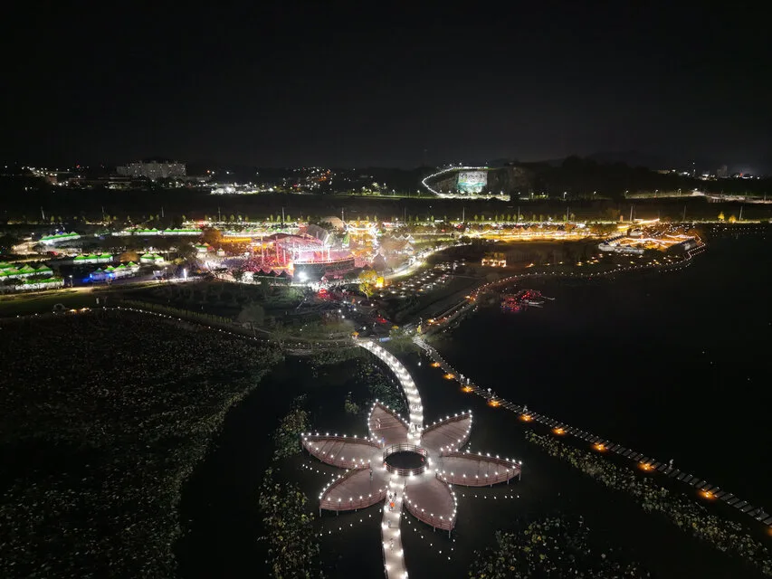
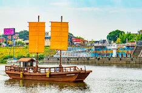
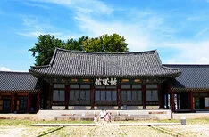
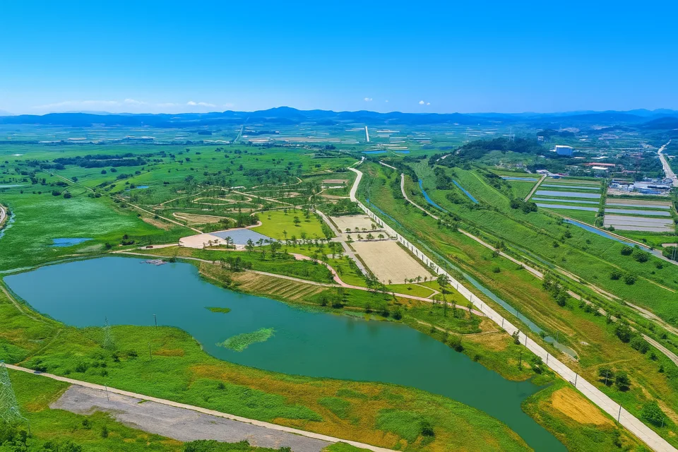
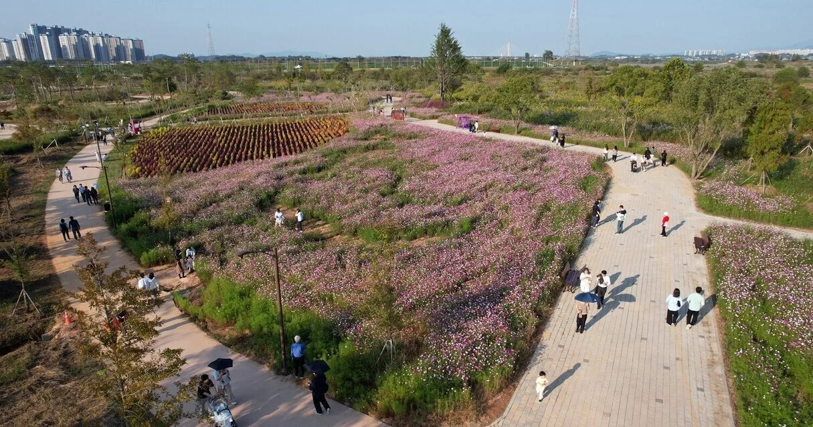
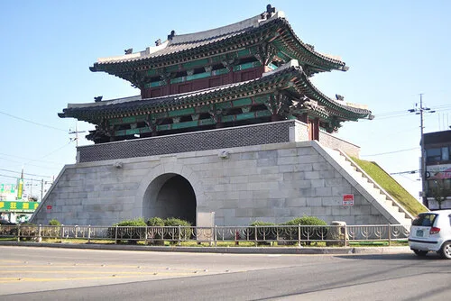

▲ 영산강정원 야간 축제 조명. 강 위에 놓인 꽃 모양 수상 데크가 축제장의 상징적인 포토스팟이다 ⓒ 나주시청
전남 나주는 영산강 뱃길을 따라 곡창지대로 성장해 온 도시다. 그 강을 다시 무대로 불러내는 나주영산강축제가 2026년에도 가을에 맞춰 열린다. 올해 슬로건은 'Hello 나주 Festival, 다시 뜨겁게'로, 2026년 10월 7일(수)부터 11일(일)까지 닷새간 영산강정원 일원(나주시 영산동 757-1번지)에서 개막식과 주제공연, 문화예술공연, 전시·체험, 통합행사가 이어진다. 같은 기간 나주농업페스타가 함께 열리고, 마지막 날에는 MBN 전국 나주 마라톤대회도 겹쳐 진행된다. 이 기사는 일정과 프로그램, 주차·교통, 나주읍성·곰탕거리 등 연계 코스까지 방문 전 확인할 정보를 정리했다.
1. 2026 나주영산강축제 — 언제, 어디서 열리나
▲ 2026 나주영산강축제 공식 포스터. 10월 7일부터 11일까지 영산강정원 일원에서 열린다 ⓒ 나주시청
축제 첫날인 10월 7일에는 고려 태조 왕건과 나주 출신 장화황후의 이야기를 재해석한 창작 뮤지컬 '왕건과 장화황후'가 배우 루나(장화황후 역)·이충주(왕건 역) 출연으로 개막식 무대에 오르고, 박지현·홍지민의 개막 축하공연에 이어 드론 라이트쇼와 불꽃쇼가 이어진다. 폐막일인 11일에는 공군 곡예비행팀 블랙이글스가 영산강 가을 하늘을 수놓으며 축제의 대미를 장식할 예정이다. 축제 기간 내내 영산강정원 일원에서는 나주농업페스타가 함께 열려 지역 농특산물 장터와 체험 프로그램도 즐길 수 있다.
| 날짜 | 주요 프로그램 |
|---|---|
| 10/7(수) 개막일 | 개막식, 창작뮤지컬 '왕건과 장화황후'(루나·이충주), 박지현·홍지민 축하공연, 드론 라이트쇼·불꽃쇼 |
| 10/8(목) | 영산강 유랑 문화싸롱, 나주시립합창단 공연, 뮤지컬 드라마틱쇼(조권·마이클리·아이비) |
| 10/9(금) | 천연염색 패션쇼, 영산강 리버웨이브 워터쇼(호미들·기리보이·위시스) |
| 10/10(토) | 핑크퐁 싱어롱쇼, 안유성 조리명장과 함께하는 푸드 오케스트라, 영산강 전국가요제, 문라이트 심포니(포레스텔라·소프라노 김은경·테너 이호철) |
| 10/11(일) 폐막일 | 티니핑 싱어롱쇼, 영산강 댄스 경연대회, 현대무용극 '댕기머리', 공군 블랙이글스 에어쇼, 폐막공연 '강변연가'(성리·김연자) |
이 밖에도 영산강의 생태·역사·문화를 소개하는 영산강 테마관, 어린이 직업체험존, 보드게임존, 축제 기간 한정 '영산강 횡단 보행교' 체험 등 세대별 즐길 거리가 폭넓게 준비돼 있다. 정확한 시간표와 공연장 위치는 공식 홈페이지 라인업 자료로 사전 확인하는 것이 좋다.
나주시청 공식 홈페이지에서 축제 일정 확인 가능2. 왜 하필 영산강인가 — 나주와 곡창지대의 역사

▲ 영산포 나루터의 황포돛배. 조선시대 조운선이 오가던 뱃길의 역사를 재현한 상징물이다 ⓒ 나주시청
나주가 영산강 축제를 매년 여는 데는 이유가 있다. 영산강 유역에 펼쳐진 나주평야는 예로부터 전라도 최대 곡창지대로 꼽혔고, 강 하류의 영산포는 고려~조선시대 세곡을 실어 나르던 조운선의 주요 포구였다. 지금도 영산포 선착장에는 옛 뱃길을 재현한 황포돛배가 정박해 있어, 강과 함께 성장한 도시의 역사를 눈으로 확인할 수 있다. 나주가 '나주평야의 중심 도시'로 불려온 배경도, 매년 가을 영산강을 무대로 축제를 여는 이유도 결국 이 강이 도시의 살림을 먹여 살려온 역사에서 출발한다.

▲ 나주목 관아의 중심 건물 금성관. 나주읍성 안에서 관찰사가 정무를 보던 객사다 ⓒ 나주시청
나주는 고려~조선시대 전라도에서 전주에 버금가는 행정 중심지였다. 그 흔적이 나주읍성과 객사 금성관으로 남아 있다. 왜구 방어를 위해 쌓은 나주읍성은 일제강점기를 거치며 대부분의 성문과 성벽을 잃었지만, 2018년 복원을 거쳐 지금의 모습을 갖췄다. 축제가 열리는 영산강정원에서 차로 10분 안팎이면 나주읍성과 금성관에 닿을 수 있어, 축제와 역사 탐방을 함께 묶는 일정을 짜기에 좋다.
3. 축제장 영산강정원 — 강변 정원과 야간 조명

▲ 영산강정원 항공 전경. 연못과 잔디광장 뒤로 나주평야 들판이 펼쳐진다 ⓒ 나주시청
축제장인 영산강정원은 평소에도 강변 산책과 계절 꽃 구경으로 찾는 이가 많은 곳이다. 가을이면 코스모스가 정원 곳곳을 물들이고, 축제 기간에는 여기에 무대와 조명, 부스가 더해져 완전히 다른 풍경이 펼쳐진다. 밤에는 강 위에 놓인 꽃 모양 수상 데크와 강변 조명이 함께 켜지면서 낮과는 또 다른 야경 명소가 된다.

▲ 가을철 영산강정원의 코스모스 화단. 산책로를 따라 걷는 방문객들의 모습 ⓒ 나주시청
축제 기간에는 방문객이 한꺼번에 몰리는 만큼, 낮 시간대에는 정원과 화단을 둘러보고 해 질 무렵부터 야간 공연과 조명을 즐기는 동선을 짜면 혼잡을 조금이나마 피할 수 있다.
4. 가는 법·주차·셔틀버스
나주시는 축제 기간 교통 혼잡을 줄이기 위해 3개 권역 셔틀버스를 중간 정차 없이 직행으로 운행할 계획이다. 원도심 노선은 나주시청, 영산포 노선은 영산포둔치체육공원, 빛가람혁신도시 노선은 한전KDN 앞을 각각 정류장으로 삼아 축제장까지 곧장 연결하며, 배차 간격은 약 10분이다. 셔틀버스 승하차장과 주요 교차로에는 교통 안내 인력이 배치될 예정이며, 축제장 진입로 신설·확장과 셔틀 전용도로 운영도 함께 추진되고 있다.
| 구분 | 내용 |
|---|---|
| 축제장 주소 | 전남 나주시 영산동 757-1번지 일원(영산강정원) |
| 셔틀버스 원도심 노선 | 나주시청 → 축제장 직행, 약 10분 간격 |
| 셔틀버스 영산포 노선 | 영산포둔치체육공원 → 축제장 직행 |
| 셔틀버스 빛가람 노선 | 한전KDN 앞 → 축제장 직행 |
| 광주에서 | 남악·광주 방면 국도·고속도로로 약 30~40분 |
| 목포에서 | 서해안고속도로·1번 국도로 약 40~50분 |
| 주차 | 축제장 인근 임시 주차장 운영, 혼잡 시 셔틀 환승 권장 |
광주·목포 등 인근 도시에서는 자가용으로 40분~1시간이면 닿는 거리라, 당일치기 방문도 충분하다. 다만 개막일과 주말에는 진입로 정체가 예상되는 만큼, 가능하면 셔틀버스 환승 구간에 주차하고 대중교통으로 갈아타는 편이 시간을 아끼는 방법이다.
나주시청 공식 홈페이지에서 교통 안내 확인 가능5. 연계 관광지·특산물 — 나주읍성·곰탕거리·나주배

▲ 나주읍성의 관문 정수루. 2018년 복원을 거쳐 옛 성문의 모습을 되찾았다 ⓒ 나주시청
축제장에서 조금만 이동하면 나주 원도심의 볼거리와 먹거리가 이어진다. 금성관을 중심으로 한 나주읍성 일대는 고샅길을 따라 옛 관아 건물과 골목을 둘러볼 수 있고, 도보권에 있는 나주곰탕거리에는 100년 넘은 노포부터 대를 이어온 곰탕집까지 여러 식당이 몰려 있다. 소뼈보다 양지·사태 같은 좋은 고기로 육수를 내 짜지 않고 개운한 맛이 특징인 나주곰탕은, 무·파·마늘을 넉넉히 써 잡내를 없애고 계란지단과 대파, 머리고기를 얹어 낸다.
▲ 나주곰탕 한 숟가락. 짜지 않고 개운한 맛이 특징으로, 나주읍성 인근 곰탕거리에서 맛볼 수 있다 ⓒ 나주시청
가을철에는 나주의 또 다른 특산물인 나주배도 놓치기 아깝다. 나주 외곽 농촌체험마을에서는 배 수확 체험과 나주배박물관 문화교실 등 계절 프로그램을 함께 운영해, 축제 관람 전후로 들르기 좋다.
| 장소 | 특징 | 축제장에서 거리 |
|---|---|---|
| 나주읍성·금성관 | 2018년 복원된 성문 정수루, 조선시대 관아 객사 | 차량 약 10분 |
| 나주곰탕거리 | 100년 넘은 노포 포함, 곰탕 전문점 밀집 | 차량 약 10분 |
| 영산포 나루터 | 황포돛배, 조운 뱃길 역사 전시 | 차량 약 10분 |
| 농촌체험마을(배 수확 등) | 나주배 수확 체험, 나주배박물관 | 차량 약 20~30분 |
✅ 2026 나주영산강축제, 가기 전 체크리스트
· 기간 2026년 10월 7일(수)~11일(일), 장소 영산강정원 일원(나주시 영산동 757-1)
· 개막일 창작뮤지컬 '왕건과 장화황후', 드론쇼·불꽃쇼 / 폐막일 공군 블랙이글스 에어쇼
· 같은 기간 나주농업페스타, 폐막일에는 MBN 전국 나주 마라톤대회 동시 진행
· 3개 권역(나주시청·영산포둔치체육공원·한전KDN) 직행 셔틀버스, 약 10분 간격 운행 예정
· 광주·목포에서 자가용 40분~1시간, 개막일·주말은 진입로 혼잡 예상
· 연계 코스로 나주읍성·금성관, 나주곰탕거리, 영산포 나루터, 나주배 체험마을 추천
· 정확한 시간표·공연장 위치는 방문 전 공식 홈페이지에서 재확인 필요